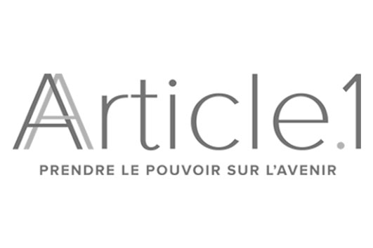

Ils m'ont fait confiance



J'aide des organisations à créer un environnement propice à ce que chacun puisse aligner qui il est avec ce qu'il fait dans son travail pour incarner véritablement qui il est.
C'est le sens, l’ambition, le cap ou le rêve poursuivit par ce projet. Elle permet de se détacher de la solution et de revenir à ce qui nous anime. Cela en fait un puissant outil de prise de décisions et un levier d’innovation, de cohésion et de motivation.
Article: Pourquoi (et comment) définir la raison d’être de son projet ?
Au quotidien, nos valeurs guident nos choix et nos comportements. Partager des valeurs au sein d’une équipe permet donc de s’assurer que, face à une même situation, chacun va naturellement adopter un comportement cohérent. Ainsi, elles sont un outil de cohésion d’équipe, de recrutement, de management et un levier de bien-être.
Article: Les valeurs, la clé pour construire une équipe qui fonctionne !
Cela m'emmène aussi régulièrement sur des sujets comme le Personnal Branding, la Marque Employeur, l’Accompagnement au changement, l’Engagement des équipes, l’Intrapreneuriat
« Maxime nous a proposé un workshop simple mais efficace, qui nous a permis de nous poser les bonnes questions pour faire émerger le "pourquoi" fondamental de notre organisation. Un tel atelier peut avoir un impact conséquent et long-terme sur notre organisation. »
Jules Zimmerman
Directeur Innovation – Cog Innov
l'honnêteté intelectuelle
la confiance
la bienveillance
Une traduction très concrète de ces valeurs est que je pratique le prix libre (vous choisissez combien vous souhaitez payer la prestation). J’explique la démarche ici
En participant toujours à la même raison d’être, je donne des cours à des étudiants en universités ou en écoles pour avoir le même impact avant le premier emploi, je développe un collectif de personnes qui portent cette ambition et une association qui propose une offre de volontariat à l'international : Pack Your Skills.